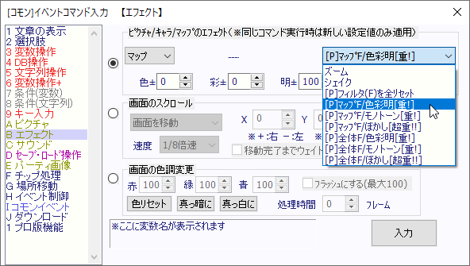

イベントコマンド 【エフェクト】 プロ版の追加機能
プロ版では「マップ」エフェクト内に追加の[P]エフェクトが搭載されています。
マップ、あるいは最終画面全体に対して、リアルタイムに色彩補正やぼかしをかけることができますが、どれも負荷は非常に大きいです。
注意してご利用ください。

【プロ版専用機能の説明】
- 「マップ」のプロ版エフェクト
[重!]と書いてあるものは非常に負荷が大きいことを表します。
下記フィルタを実行してConfigで「ソフトウェアモード」でゲームを実行すると60fpsから10fpsまで実行速度が下がるケースがあります。
+ [P]フィルタ(F)を全リセット … 以下の「F」が付いたエフェクトを全て解除します。
+ [P]ﾏｯﾌﾟF/色彩明[重!] … リアルタイムで「現在のマップとマップイベント画像」の色相・彩度・明度を補正します。
色相は±で設定でき360で一周(0：赤 120：緑 240：青)、彩度は-255〜で指定、明度は-255〜255の範囲で有効です。
+ [P]ﾏｯﾌﾟF/モノトーン[重!] … リアルタイムで「現在のマップとマップイベント画像」をモノトーン（1色）に変換します。
色相は「色彩明」と同じで、65くらいでセピア色になります。
+ [P]ﾏｯﾌﾟF/ぼかし[超重!!] … リアルタイムで「現在のマップとマップイベント画像」をぼかします。ぼかし量は1〜16で指定できます。
+ [P]全体F/色彩明[重!] … リアルタイムで「表示される最終画面」の色相・彩度・明度を補正します。
色相は±で設定でき360で一周(0：赤 120：緑 240：青)、彩度は-255〜で指定、明度は-255〜255の範囲で有効です。
+ [P]全体F/モノトーン[重!] … リアルタイムで「表示される最終画面」をモノトーン（1色）に変換します。
色相は「色彩明」と同じで、65くらいでセピア色になります。
+ [P]全体F/ぼかし[超重!!] … リアルタイムで「表示される最終画面」をぼかします。ぼかし量は1〜16で指定できます。
最終画面に対しておこなわれるエフェクトなので、文字もぼかされます。
※「マップF」に関しては、将来的にプロ版でないのWOLF RPGエディターでも同等の表現ができるようになる可能性がございます。
たとえば、「キャラやタイル画像そのもの」に対して色相変化ができる機能などが実装されるかもしれません。
（このページのマップ・全体F機能は気軽に使うには負荷が大きすぎることを理由にプロ版の方に入れていますので、問題がなければ同等の機能でも無料版に搭載されます）
※描画順の都合で、「マップF」機能はIDが「-1〜-999999」「-10万以下」のピクチャに対してもエフェクト効果を与えてしまいますので注意してください。
IDが0以上のピクチャには影響を与えません。